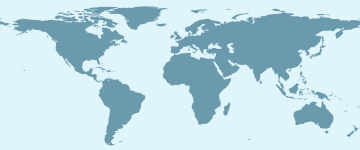

Beyond the IVC series
Meetings we follow
These are not IVC’s own meetings. They are working groups, connectathons, and congresses IVC tracks because vaccine coding, terminology, and interoperability work happens there.

- Standards and terminology
- Testing and connectathons
- Registry and implementation
- Developer and technical
- Policy and ecosystem
Showing meetings from …
Upcoming meetings
The same meetings as the map, for the dates you chose.
No meetings in this window.